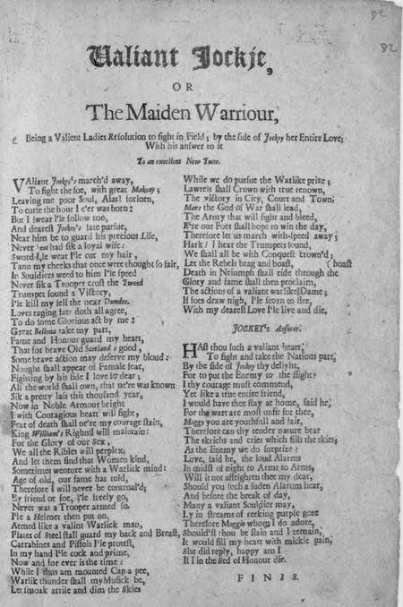

Valiant Jockey
or the Maiden Warrior
A broadside ballad about Killiecrankie and Dunkeld
Tune
UNKNOWN, here replaced by"Killiecrankie" sequenced by Barry Taylor
Sheet music- Partition

National Library of Scotland - Probable date published: 1710 shelfmark: S.302.b.2(082)

|
or The Maiden Warrior, (1) Being a valiant lady's resolution to fight in field; by the side of Jockey (2) her entire love; with his answer to it To an excellent new tune. 1. Valiant Jockey's marched away To fight the foe, with great McKay. (3) Leaving me poor soul, Alas! forlorn, To curse the hour I e'er was born: But I swear I'll follow too, And dearest Jockey's fate pursue, Near him be to guard his precious life, Never man had such a loyal wife : 2. Sword I'll wear I'll cut my hair , Tan my cheeks that once were thought so fair, In soldier's weed to him I'll speed Never such a trooper crossed the Tweed. Trumpet sound a Victory! I'll kill myself the next Dundee. (4) Love's raging fate doth all agree, To do some glorious act by me : 3. Great Bellona (5) take my part, Fame and honour guard my heart, That for brave Old Scotland's good , Some brave action may deserve my blood : Nought shall appear of female fear, Fighting by his side I love so dear; All the world shall own, that ne'er was known Such a pretty lass this thousand year. 4. Now in noble armour bright I with courageous heart will fight, Fear of death shall ne'er my courage stain, King William's rights I will maintain : For the glory of our sex, We all the rebels will perplex; And let them find that women kind, Sometimes venture with a warlike mind: 5. Age of old, our fame has told, Therefore I will never be controlled; By friend or foe, I'll freely go, Never was a trooper armed so. I'll a Helmet then put on, Armed like a valiant warlike man, Plates of Steel shall guard my back and breast, Carbines and Pistols I'll protest, 6. In my hand I'll cock and prime, Now and for ever is the time : While I thus am mounted cap a pee, Warlike thunder shall my music be, Let smoke arise and dim the skies While we do pursue the warlike prize , Laurels shall crown with true renown, The victory in city, court and town. 7. Mars the god of war shall lead, The Army that will fight and bleed, Ere our foes shall hope to win the day, Therefore let us march with speed away; Hark! I hear the trumpets sound, We shall all be with conquest crowned; Let the rebels brag and boast, Death in triumph shall ride through the host 8. Glory and fame shall then proclaim, The actions of a valiant warlike dame; If foes draw nigh, I'll scorn to flee, With my dearest Love I'll live and die. JOCKEY's Answer 9. Hast thou such a valiant heart To fight and take the Nation's part By the side of Jockey thy delight, For to put the enemy to the flight? I thy courage must commend. Yet like a true entire friend, I would have thee stay at home, said he, For the warfare's most unfit for thee. 10. Maggie, you art youthful and fair. Therefore can thy tender nature bear The screeches and cries which fill the skies, As the enemy we do surprise? Love, said he, the loud alarms In midst of night to arms to arms, Will it not affrighten thee my dear, Should you such sudden alarum hear, 11. And before the break of day, Many a valiant soldier may, Lie in streams of reeking purple gore Therefore Maggie whom I do adore, Shouldst thou be slain and I remain; It would fill my heart with mickle (6) pain, She did reply, happy am I If I in the bed of Honour die. F I N I S . |
Ou La Pucelle de Killiecrankie (1) Résolution d'une vaillante dame d'aller sur le champ de bataille combattre au côté de Jockey (2), son bien-aimé Avec la réponse de celui-ci Sur un excellent air nouveau 1. Regardez, le vaillant Jockey Qui part combattre avec le grand McKay (3). Tandis que, pauvre de moi, me voici Bien seule à maudire l'heure où je naquis: Mais je le suivrai, j'en fais le serment. Ce que Jockey fait, j'en ferai tout autant. Je protègerai sa précieuse vie. Jamais femme n'aima tant son cher mari! 2. Bien armée, les cheveux coupés, Les joues brunies par le soleil d'été, Vêtue en soldat, j'accours sur ses pas Jamais la Tweed ne vit hussard comme moi. Sonnez la victoire qui n'est pas loin Car le prochain Dundee (4) mourra de ma main. Amour et destin farouche à la fois Se lient pour que j'accomplisse quelque exploit. 3. Bellone (5), viens à mon secours! La gloire et l'honneur secondent l'amour! Le sort de la vieille Ecosse en dépend. Pour quelque haut fait je veux verser mon sang. Et me gardant bien des pleurs féminins, A côté de l'aimé je me battrai bien. Le monde ébloui d'un spectacle inouï Verra ce qu'en mille ans jamais il ne vit. 4. Ayant revêtu ma cuirasse, Avec courage je tiendrai la place. La peur de la mort ne m'effleure pas. Je défendrai le Roi Guillaume et ses droits. Il convient pour la gloire du beau sexe Qu'à la rébellion nous fassions tous échec, Qu'on sache que l'éternel féminin, Si doux, peut parfois devenir assassin. 5. Les anciens en sont convenus. Devant personne je ne plierai plus Amis, ennemis, qu'importe, je sais Etre libre, comme tout bon cavalier. Je serai coiffée d'un casque à cimier, Armée jusqu'aux dents, comme un guerrier vaillant. Les plaques d'acier sont mon bouclier, Pour braver carabines et pistolets. 6. Ma main sait armer et tirer. Et c'est l'heure maintenant ou jamais. Puisque armée de la tête aux pieds je suis, Le fracas des armes soit ma mélodie. Que le ciel s'obscurcisse de fumées, Tandis que nous moissonnerons les lauriers Couronnant dignement notre renom, Vainqueurs dans toutes les villes et cantons. 7. Mars, le dieu des armées, voudra Conduire nos pas au sanglant combat. Avant que l'ennemi reprenne espoir, Mettons-nous en marche, car il se fait tard. Ecoutez! J'entends sonner le clairon, Annonçant le succès de nos bataillons. Les rebelles ont beau faire les paons, La Mort en triomphe traverse leurs rangs. 8. Trompettes de la renommée, Pour la guerrière vous devrez sonner. S'ils approchent, je répugne à m'enfuir Avec mon amour je veux vaincre ou mourir! Réponse de JOCKEY 9. Quel coeur courageux as-tu donc Pour vouloir combattre pour la Nation Avec à ton côté ton cher Jockey Et mettre en fuite ainsi tous les ennemis? Un tel cran je ne peux que le louer, Mais il faut comme un ami m'écouter Mieux vaut, dit-il, rester à la maison. Quitte ce projet guerrier hors de saison! 10. argot, si jeune et si jolie, Crois-tu que tu supporteras les cris Et les grondements emplissant les cieux, Quand par surprise nous tomberons sur eux? Pense aussi, ma chère, à ces cris d'alarme, Aux nocturnes appels "Aux armes! Aux armes!", N'en seras-tu pas, ma chère, effrayée, Si jamais un tel vacarme t'éveillait? 11. Et avant le lever du jour Plus d'un vaillant combattant alentour, Baignera dans des flots de sang fumant. Et, vois-tu, ma Margot, toi que j'aime tant, Si je devais te survivre au combat, Pareil chagrin je ne supporterais pas. Elle répondit: "Pour moi quel bonheur, Ce serait d'ainsi mourir au champ d'honneur!" Trad. Ch.Souchon (c) 2006 |
|
(1) Maiden Warrior
: Allusion to Joan of Arc
(2) Jockey : Scottish diminutive for John. Also a Scot in general. (3) Hugh McKay (1640 - 1692) : Commander in chief of the Williamite forces in Scotland. (4) Next Dundee : After his death on July 27th 1689, "Bonnie Dundee" was replaced by Colonel Cannon, known as his "inept successor". (5) Bellona, Mars : Roman goddess and god of the war. (6) Mickle : much |
(1) La Pucelle
: allusion à Jeanne d'Arc.
(2) Jockey : Diminutif écossais de Jean. Désigne aussi un écossais en général. (3) Hugh McKay (1640 - 1692) : commandant en chef des troupes orangistes en Ecosse. (4) Le Prochain Dundee : à sa mort, "Bonnie Dundee" fut remplacé par le Colonel Cannon, "son successeur incapable". (4) Bellone, Mars : déesse et dieu romains de la guerre. |